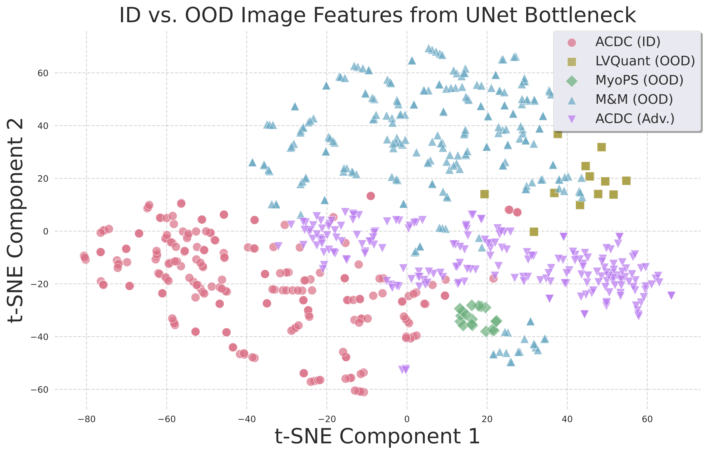
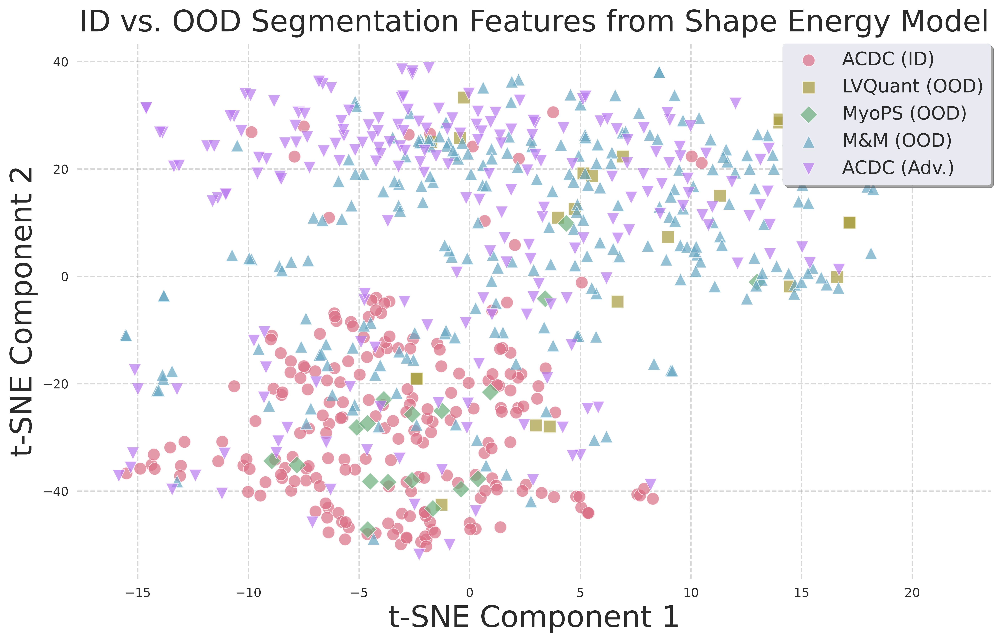
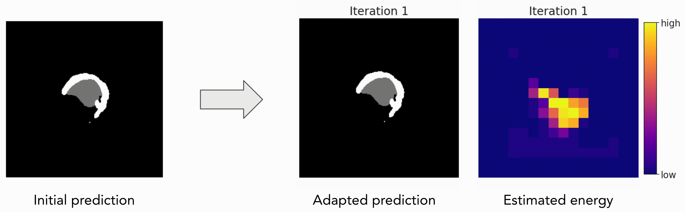

Progressive update visualization


Our adversarial perturbation strategy produces images and segmentations that align with OOD cases, validating its effectiveness in modeling real covariate shifts.
Progressive update visualization


Our method progressively refines segmentation quality over iterations (left), while achieving better convergence under the same time budget (right).